Related events
Every rule that paints this component, in one file. Colour through a role, geometry straight from a primitive.
What it is
The way out of an event that is not the way back. Three or four other markets at the foot of a detail screen, each a question with its odds, so a person who has finished reading one event has somewhere to go that is not the browser's back button.
It exists for the moment a screen has answered its question. An event that is resolved, a bet that is placed, a market a person decided against: all three end with a person on a page that has nothing left to do, and this is the block that stops that being a dead end.
Anatomy
Which part is which, in the product's own words. Every class named here is one this file styles, and the build fails if it is not.
.related-events- the plate at the foot of the detail column..related-list- the rows..rel-thumb- the event photograph, which is content and goes on the element as a background image, one of the three things gate 9 lets through..rel-q- the question. The whole question, wrapped, not truncated: a market a person cannot read is not a suggestion..rel-odds- the current probability, the one figure a row carries..related-more- the standalone control under the list, labelled Browse more events because that is the verb every empty state in the product uses.
Live
The component in the markup it ships with, quoted from the frozen kit, inside the product's own wrapper and painted by components/index.css alone. Each frame is a page of its own, so the width under the title is a real viewport and the media queries answer to it.
States, as they look
Photographs, not renderings. Each was taken in the specimen linked beside it with a REAL pointer, a real Tab and the mouse button really held down (ui-kit/_verify/states.cjs); nothing here is a state faked with a stand class, which is the rule this section used to be missing because of. One row per distinct FACE: two elements that measure the same at rest are one picture, however many screens carry them, and that grouping is computed rather than chosen. The pictures go stale the moment a rule changes, so each one records the files it was taken from and python3 ui-kit/_states.py fails when their bytes move.
A row at rest and under the pointer. The plate answers, the photograph does not move, and the question stays exactly where it was: a row that shifts under the pointer is a row a thumb misses.
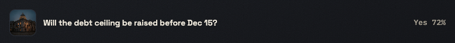
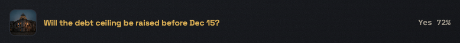
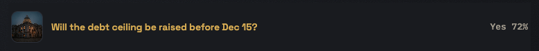
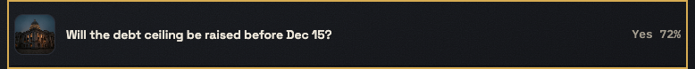
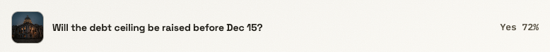
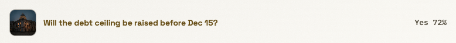
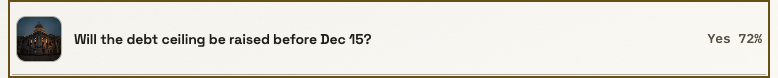
The way-out control: the graphite chip family's answer, the same one loadmore and the category chips give, because a person who has met one of them has met all three.
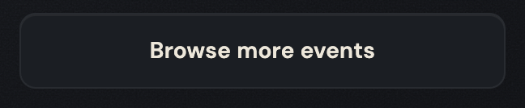
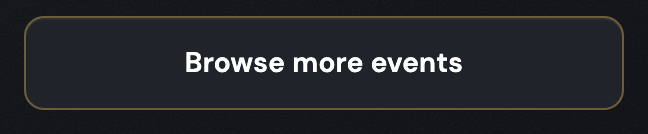
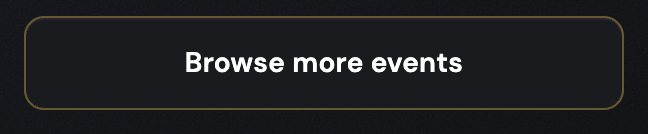
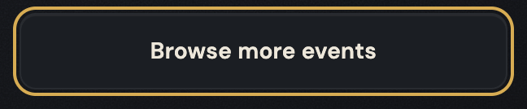
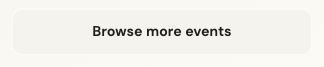
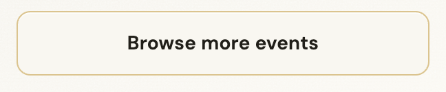
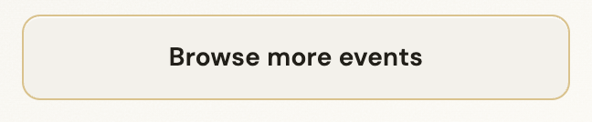
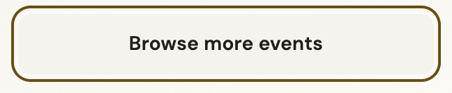
When to use
The judgement a generator cannot read out of css, and the reason ui-kit/authored/related.md exists.
At the foot of an Event Detail screen, and it is on all ten of them for a reason: the four bet states, the resolved state and the logged-out variants are exactly the moments when a person is most likely to be finished.
Not on a feed. A list of events at the foot of a list of events is the same list twice, and the browse screen's own way out is loadmore.
Not as a recommendation engine's slot. The rows are other markets in the same category, and the block says so by standing where it does rather than by claiming relevance it cannot prove; a heading like "You may also like" would be exactly the borrowed authority the product's second design principle rules out.
The rule, and the anti-rule
One sentence to follow and one mistake worth naming. An anti-rule has to name the component that should have been used instead, or it is a complaint rather than an address, and the build checks that it does.
Every row is a whole question and a real number: a truncated market or one with no odds is a suggestion a person cannot judge, which is worse than no suggestion.
Never put its way-out control inside a sentence: the system styles no a in body prose, so a link written into a paragraph renders in the browser's own blue, and the two blocks that carry prose in this product, seo-plate and this one, both answer it the same way, with a standalone control after the text.
Seen: ui-kit/docs/backlog.md S3, opened while building the Terms page, where the link was moved OUT of the sentence into a standalone control rather than an inline link style being invented, and this component's .related-more is what it was moved to look like.
Roles it reads
Colour comes in only through these. Change one on the token page and it changes here and on every screen at once.
--bevel-faint--bevel-hi--bevel-lo--bevel-notice--bg-chip--bg-control-hover--bg-page--bg-plate--bg-plate-from--bg-pressed--border-brass-hover--border-hairline--edge-groove-dark--edge-groove-light--scrim--shadow-ink-45--shadow-ink-60--shadow-ink-72--shadow-ink-85--surface-grain--text-brass--text-chip-hover--text-muted--text-primary--text-strongClasses
Every class this file styles, and how many of the 105 painted screens carry it. A zero is not automatically dead: the last column says whether the class is built at runtime, shown only in the kit, a leftover of the grey wireframes, used by a course page, or genuinely used by nothing. Gate 30 fails the build on the last kind.
| class | screens | if zero |
|---|---|---|
| .app-case | 105 | |
| .rel-odds | 10 | |
| .rel-q | 10 | |
| .rel-thumb | 9 | |
| .related-events | 10 | |
| .related-list | 10 | |
| .related-more | 10 |
Where it stands
Written from
The authored half of this page is the one artefact here no gate can read: a sentence cannot be checked for being true. So it names its sources before it says anything, and the build fails when one of them does not exist. Read this first if you doubt a claim above it.
ui-kit/docs/inventory.mdL90 - "Related events plate (.related-events)", filed L2, on event-detail, state list, 9 screens, and its art column says event.- The 10 painted screens that carry it, all of them an Event Detail variant, including the four bet-flow states and the resolved one.
voice/docs/microcopy.mdL1423 - the labelBrowse more eventson.related-more, with the reason recorded: "same verb as the empty states, so leaving a dead end reads the same everywhere".ui-kit/docs/backlog.mdS3, where the standalone control after prose was the answer to a link inside a sentence, and this component is the pattern that answer was taken from.ui-kit/docs/backlog.mdL29, where this is one of the nine components the Terms page was assembled from without a new class.
What the file says
The selectors and the css, for a person about to edit them. To change this component, edit components/related.css; to change a value it reads, edit the role in components/tokens.css.
Every state rule, and what it moves
| selector | what moves |
|---|---|
| .app-case .related-list a:hover .rel-q | color:var(--text-brass) |
| .app-case .related-list a:active | background:var(--bg-pressed) |
| .app-case .related-more:hover | border-color:var(--border-brass-hover);background:var(--bg-control-hover);color:var(--text-strong) |
| .app-case .related-more:active | background:var(--bg-pressed) |
The tokens these states read, on both grounds
Neither panel is a screenshot. Each carries data-theme itself, so the token resolves inside it and a role that was given a value in only one theme shows up here as a control that does not move.
--text-brassConfirm betthe label, on the ground this state puts it on--bg-pressedConfirm betthe ground the control settles onto--border-brass-hoverConfirm betthe edge this state draws--bg-control-hoverConfirm betthe ground the control settles onto--text-strongConfirm betthe label, on the ground this state puts it on--text-brassConfirm betthe label, on the ground this state puts it on--bg-pressedConfirm betthe ground the control settles onto--border-brass-hoverConfirm betthe edge this state draws--bg-control-hoverConfirm betthe ground the control settles onto--text-strongConfirm betthe label, on the ground this state puts it oncomponents/related.css
/* components/related.css
Component: related. Classes: .rel-odds, .rel-q, .rel-thumb, .related-events, .related-list, .related-more.
Reads: --bevel-faint, --bevel-hi, --bevel-lo, --bevel-notice, --bg-chip, --bg-control-hover, --bg-page, --bg-plate, --bg-plate-from, --bg-pressed, --border-brass-hover, --border-hairline, --edge-groove-dark, --edge-groove-light, --scrim, --shadow-ink-45, --shadow-ink-60, --shadow-ink-72, --shadow-ink-85, --surface-grain, --text-brass, --text-chip-hover, --text-muted, --text-primary, --text-strong
Stand: ui-kit/related.html
Stands on: 10 ui-visual screens (event-detail-bet-error.html, event-detail-bet-insufficient.html, event-detail-bet-processing.html, event-detail-bet-reconcile.html, event-detail-logged-out-multi.html, ...)
Colour goes through a role, geometry straight from a primitive. No em dash. */
.related-events{border-top:1px solid var(--border-hairline)}
.related-list{list-style:none;padding:0;margin:0}
.related-list a{justify-content:space-between;font-size:var(--text-13)}
.app-case .related-events{position:relative;overflow:clip;background-color:var(--bg-plate);background-image:var(--surface-grain),linear-gradient(162deg,var(--bg-plate-from),var(--bg-page));background-blend-mode:overlay,normal;border:1px solid var(--shadow-ink-45);border-radius:var(--radius-10);box-shadow:inset 0 1px 0 var(--bevel-hi),inset 0 3px 9px -5px var(--bevel-lo),
inset 1px 0 0 var(--bevel-faint),
inset -1px 0 0 var(--scrim),inset 0 -1px 0 var(--shadow-ink-60),
0 30px 58px -34px var(--shadow-ink-85),0 12px 26px -18px var(--shadow-ink-72)}
.app-case .related-events{margin:0}
.app-case .related-events{padding:var(--space-20) var(--space-20) var(--space-20)}
.app-case .related-events h2{font-family:var(--font-display);font-size:var(--text-16);font-weight:var(--weight-bold);color:var(--text-primary);margin:0 0 var(--space-8)}
.app-case .related-list{display:flex;flex-direction:column}
.app-case .related-list li{border-bottom:1px solid var(--edge-groove-dark)}
.app-case .related-list li:last-child{border-bottom:0}
.app-case .related-list a{display:flex;align-items:center;gap:var(--space-12);padding:var(--space-12) var(--space-4);color:var(--text-primary);text-decoration:none}
.app-case .rel-thumb{width:46px;height:46px;flex:0 0 46px;border-radius:var(--radius-10);border:1px solid var(--border-hairline);background-size:cover;background-position:center}
.app-case .rel-q{flex:1;min-width:0;font-family:var(--font-display);font-weight:var(--weight-semibold);font-size:var(--text-14);line-height:var(--leading-snug);letter-spacing:-.01em;color:var(--text-primary);display:-webkit-box;-webkit-box-orient:vertical;-webkit-line-clamp:2;line-clamp:2;overflow:hidden}
.app-case .related-list a:hover .rel-q{color:var(--text-brass)}
/* Press. The whole row IS the link, so the ground goes on the <a>: the <li> around it owns only
the groove between rows, and a state drawn there would sit outside the thing being pushed. This
is the tap target of nine event screens, on mobile, where the hover above never fires. The row is
flat at rest, so only the ground moves, and the question keeps the brass hover gives it. */
.app-case .related-list a:active{background:var(--bg-pressed)}
.app-case .rel-odds{flex:0 0 auto;font-family:var(--font-mono);font-size:var(--text-13);color:var(--text-muted);white-space:nowrap}
.app-case .related-more{display:flex;align-items:center;justify-content:center;margin:var(--space-16) auto var(--space-2);width:100%;max-width:300px;min-height:var(--control-44);padding:var(--space-12) var(--space-24);font-family:var(--font-body);font-weight:var(--weight-semibold);font-size:var(--text-14);letter-spacing:.01em;color:var(--text-chip-hover);background:var(--bg-chip);border:1px solid var(--bevel-notice);border-radius:var(--radius-10);text-decoration:none;box-shadow:inset 0 1px 0 var(--edge-groove-light);transition:border-color var(--dur-base) ease,background var(--dur-base) ease,color var(--dur-base) ease}
.app-case .related-more:hover{border-color:var(--border-brass-hover);background:var(--bg-control-hover);color:var(--text-strong)}
/* The same chip as Load more elsewhere, and it answered the pointer on the way in but said nothing
when pushed. Equal specificity to the hover above, so it has to sit after it. The inset top bevel
is the chip's own edge and not a lift, so it stays; there is no outer shadow to drop. */
.app-case .related-more:active{background:var(--bg-pressed)}